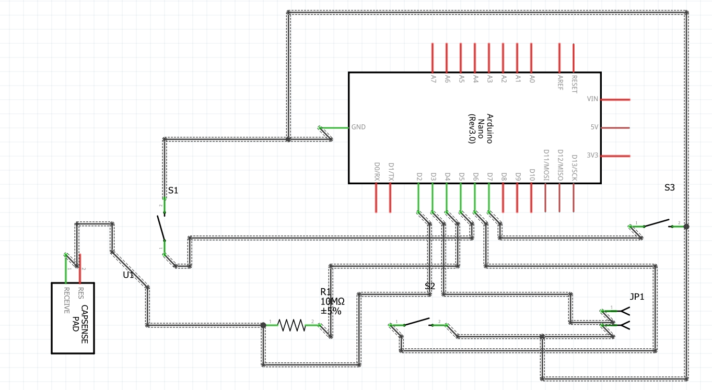
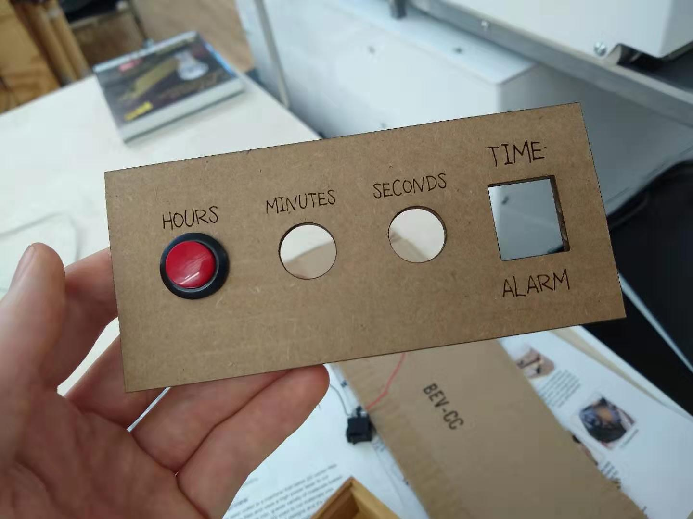
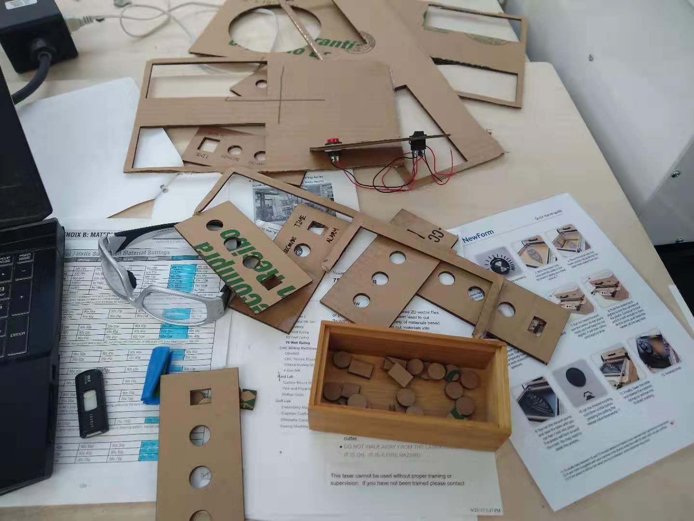
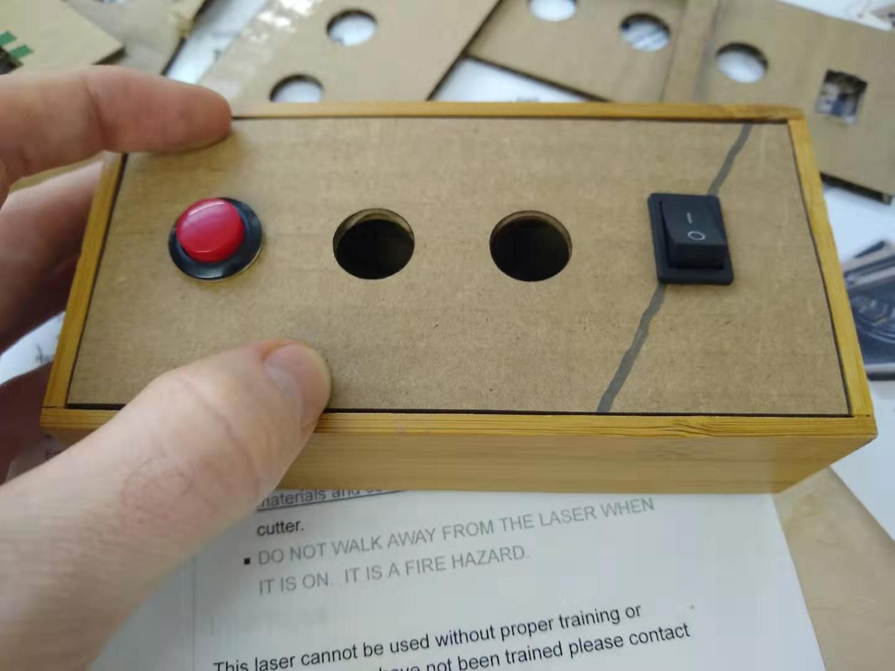
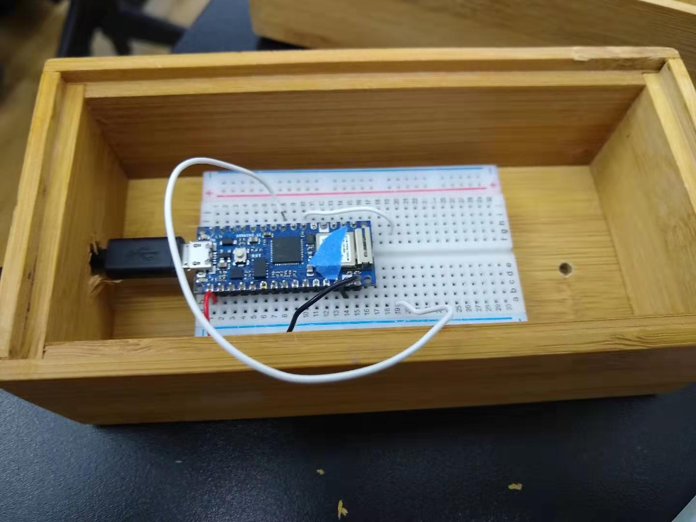
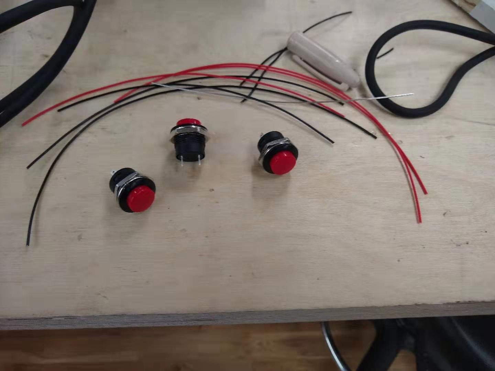
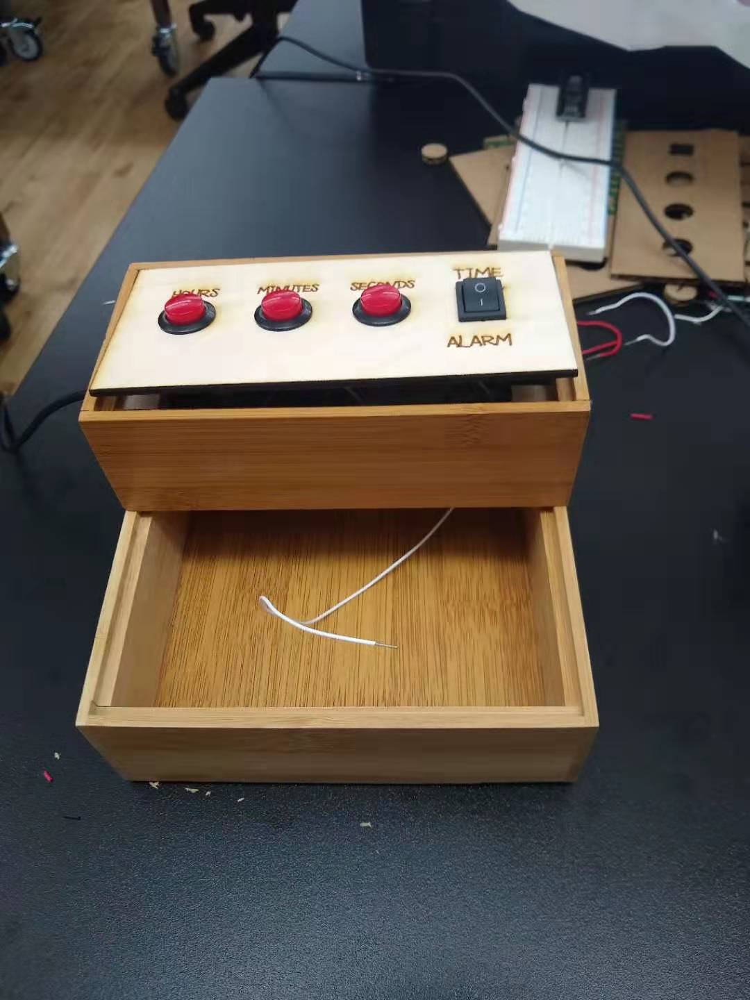
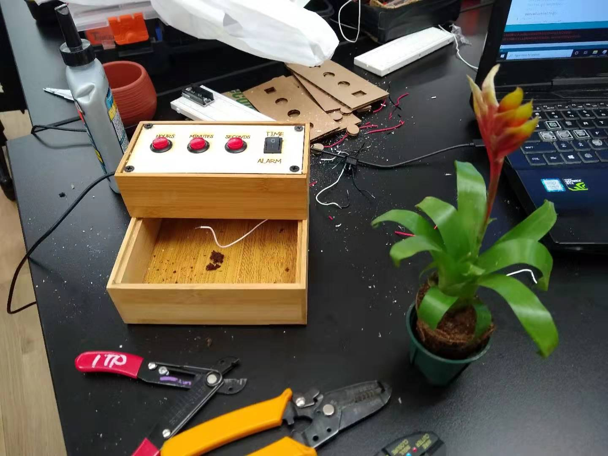
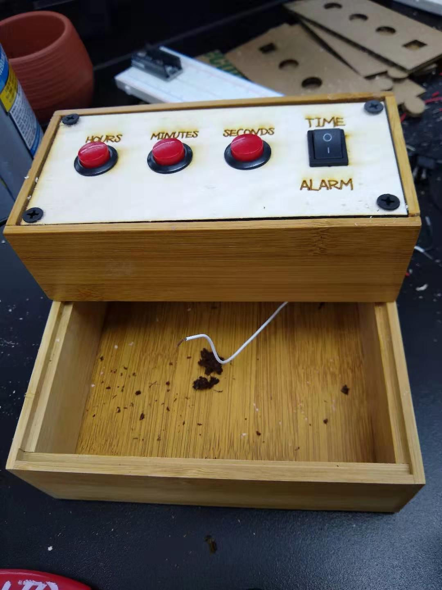

For some reason, when I heard the assignment was to build a clock, I immediately thought of a flower clock -- a hypothetical device where one could use flowers to tell time by measuring when the flowers opened and closed. The problem with flower clocks is that... they don't really work. But I love flowers, and I love incorporating nature into my work, so I thought why not build, instead of a flower clock, a clock with a flower?
My plan was to use the plant as part of the clock's control interface, and I decided that I would make the clock so that by touching the plant you could change time or set an alarm. Making the plant-touching work required the use of Arduino's CapSense library, which is phenomenally easy to use. Just by putting a wire into the soil of the plant, I could detect when someone was touching it.
With the capsense figured out, I needed to decide on how I would change the time. I bought three arcade buttons from Tinkersphere, one to use as hours, one to use as minutes, and one to use as seconds. I also bought a rocker switch since I wanted my flower clock to have both a time set and an alarm function.
I organized my materials so that the electronics sat in the smaller bamboo organizer above the potted plant, since I didn't want any water to get on my microcontroller or buttons ans ruin them. I needed to fabricate a control panel for the buttons and rocker switch, which took a lot of tries prototyping on cardboard because the dimensions of the rocker switch were off on the Tinkersphere site. Once I had all the dimensions down correctly, I put the panel mount elements of my control panel in and soldered wires to them all.
After that, all that remained was putting the pieces together. I put the microcontroller inside the smaller box, drilled a small hole through the bottom so the wire could go into the plant soil, drilled another hole into the side so the micro-USB could go through, and after attaching the control panel to the microcontroller I screwed it all in. Then I spread some potting soil on the bottom layer and put my plant in!
         Comments? Questions? Concerns? Email me here!